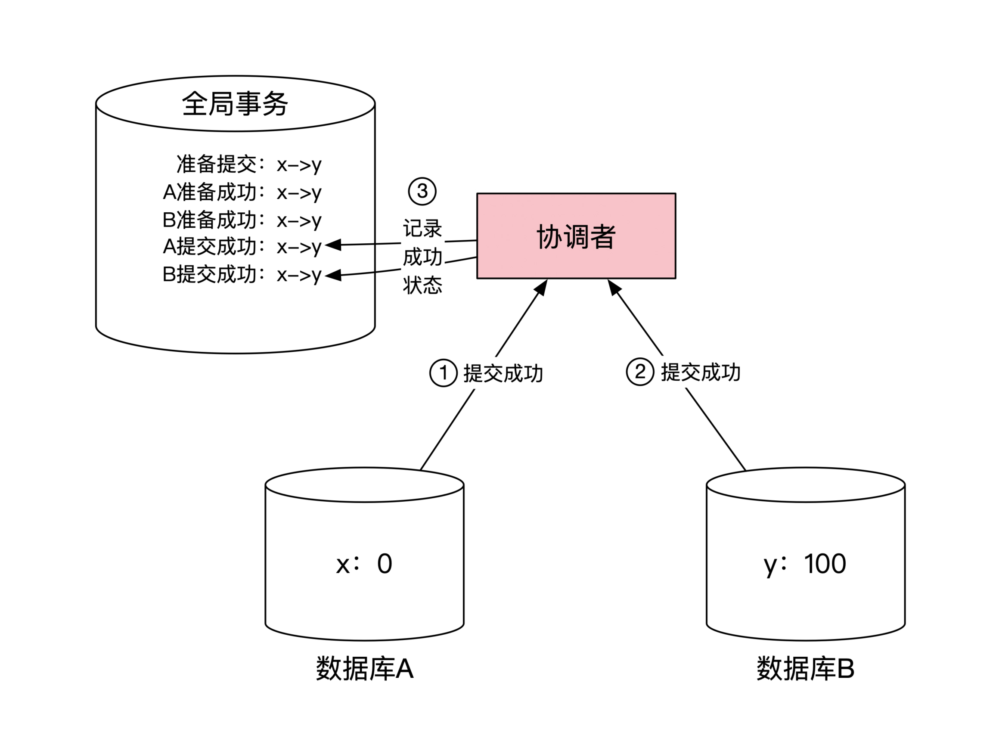

- 00 开篇词 如何成为金融级人才？.md.html
- 01 业务初探：扫了二维码之后发生了什么？.md.html
- 02 原理解读：如何理解第三方支付的业务逻辑和系统组件？.md.html
- 03 产品大观：不同金融业务都有哪些技术实现要点？.md.html
- 04 领域驱动设计（上）：如何设计金融软件顶层架构？.md.html
- 05 领域驱动设计（下）：如何设计统一的金融业务模型？.md.html
- 06 计算输入的正确性：怎么选择正确时间的数据？.md.html
- 07 计算过程的正确性：如何设计正确的数据处理架构？.md.html
- 08 计算结果的正确性：怎么保证计算结果是正确的？.md.html
- 09 数据传输的质量：金融业务对数据传输有什么要求？.md.html
- 10 数据存储的合理性：金融业务可以不用关系型数据库吗？.md.html
- 11 系统优化：如何让金融系统运行得更快？.md.html
- 12 正确性分级（上）：单机无备份有哪几种不同的一致性？.md.html
- 13 正确性分级（中）：多机无容灾有哪几种不同的一致性实现？.md.html
- 14 正确性分级（下）：多机有容灾有哪几种不同的一致性？.md.html
- 15 分布式正确性的存在性（上）：什么情况下不存在分布式共识算法？.md.html
- 16 分布式一致性（下）：怎么理解最简单的分布式一致性算法？.md.html
- 17 正确性案例（上）：如何实现分布式的事件溯源架构？.md.html
- 18 正确性案例（中）：常见分布式数据方案的设计原理是什么？.md.html
- 19 正确性案例（下）：如何在运行时进行数据系统的动态分库？.md.html
- 20 容灾（上）如何实现正确的跨机房实时容灾？.md.html
- 21 容灾（下）：如何通过混沌工程提高系统稳定性？.md.html
- 春节策划第1期 分布式金融系统知识，你掌握了多少？.md.html
- 春节策划第2期 读书如抽丝，为你推荐一些我读过的好书.md.html
- 春节策划第3期 如何运用架构知识解读春运买票和手游案例？.md.html
- 答疑集锦（一） 思考题解析与外汇架构知识拓展.md.html
- 答疑集锦（三） 思考题解析与数据库底层实现.md.html
- 答疑集锦（二） 思考题解析与账务系统优化.md.html
- 结束语 金融之道，与你同行，虽远尤欣.md.html
- 捐赠
13 正确性分级（中）：多机无容灾有哪几种不同的一致性实现？
你好，我是任杰。这一讲我想和你聊一聊怎么在多机无容灾的情况下保证一致性。
我在前一节课里给你介绍了，在单机情况下的5种不同的一致性级别。在分布式环境下，由于网络存在很大的不确定性，金融系统首要关心的不是如何在这些一致性中做选择，而是理论上有没有可能达到最高的正确性。那么这节课我们就来学习一下最常用的两个方法。
背景
在分布式环境下，每个节点上的数据库都会保证这台机器的数据操作具有可串行化或者快照隔离的事务隔离级别，但是这只是本地机器局部的事务保证，是分散的信息。
如果想要具有分布式事务（Distributed Transaction）的能力，就需要有个方法把局部的信息收集起来做集中决策。这个收集的过程和做集中决策的过程也需要有事务的保证。通过单机事务来达到多机之间的事务协调，通过单机事务的正确性来保证全局事务的正确性，你在后面的学习中一定要注意这个核心思路。
分布式事务的实现也分为两种不同的级别。一种是偏底层的实现，由数据库自己来实现分布式事务，比较著名的有两阶段提交（2PC）和三阶段提交（3PC）。另一种是偏上层实现，业务系统自己来实现分布式事务，在国内比较常见的是TCC。接下来我们先看看两阶段提交。
两阶段提交（2PC）
假设
前面提到过，分布式事务需要有人能收集信息后做集中决策，这个人就是两阶段提交的协调者（Coordinator）。
想理解2PC，你要先知道分布式环境的两个假设：
第一，每台机器是独立的，它有自己独立的事务控制机制。两台机器间没有直接交流。
第二，协调者是唯一和所有其他机器交流的角色。它负责给所有机器发指令。机器收到指令后一定需要执行，但是执行不一定会成功。另外，不稳定的网络可能会造成指令丢失，或者指令的返回状态丢失。
协调者只是一个角色，它既可以是一台单独的机器，也可以是集群里的某一台机器。下面这幅图列举了这两种不同的协调者选择方式：
协议
顾名思义，两阶段提交一共分为两个阶段。
在第一阶段，协调者向所有参与的数据库发送准备提交的消息。每个数据库在收到协调者的消息之后，对自己本地的数据库进行预处理，比如给数据加锁、修改数据等等。
如果预处理成功，本地数据库返回准备成功的消息给协调者。如果预处理失败，则返回准备失败的消息。请注意，这时候本地的数据库事务还没有完成，也就是既没有提交事务，也没有回滚事务。
在第二阶段，协调者会收集所有参与者的准备状态。如果所有人都返回了准备成功的消息，那么协调者发消息让所有参与者提交本地事务，这时候整个分布式事务属于提交状态。如果出现了任何问题，协调者就会发消息让所有参与者回滚本地事务，这时候整个分布式事务处于回滚状态。
导致分布式事务回滚的问题有很多种，比如至少有一台机器返回了准备失败，或者一段时间之后没有收到一台机器的准备情况，我在后面还会提到。
举例：两个账号跨机器转账
我们还是举个例子来加深理解。分布式事务最常用的例子，就是账务系统中两个账号之间的跨机器转账。
我们假设用户 x 给用户 y 转100元钱。最开始用户 x 刚好有100元，存在一台数据库 A 上。用户 y 最开始没钱，信息存在另一台数据库 B 中 。
转账后 x 的余额为0，而 y 的余额为100。转账的代码用SQL代码写出来，就是下面这个样子：
begin transaction
update A set balance= 0 where accountID='x'
update B set balance=100 where accountID='y'
end transaction
下面这幅图给你展示了我们在分布式环境下转账想要达到的结果：-
由于数据库 x 和 y 在两个不同机器，所以我们要用分布式事务来保证整个转账不出问题。
首先，协调者要在自己的本地数据库记下来全局事务状态，里面记录了分布式事务到达了第一阶段的准备提交状态。
接着，协调者分别给数据库 A 和 B 发送准备提交的细节，A 需要将 x 变为0，而 B 需要将 y 变为100。这一步的示意图如下：-
数据库 A 在收到协调者消息后，会对自己本地的数据库进行操作，将 x 变为0，返回给协调者准备成功的消息。
同样，数据库 B 将 y 变为100后也会返回给协调者准备成功的消息。然后协调者将这两个数据库的返回状态记录到自己的全局事务状态表里。这一步示意图如下：
协调者收到所有数据库的成功消息后，两阶段提交的第一阶段就顺利结束了。协调者在本地记录这个事实，然后开始第二阶段的提交过程。这时候协调者给每个数据库发出提交事务的消息。这个过程的示意图如下：

数据库 A 和 B 提交了本地事务之后，会将提交成功的消息返回给协调者。协调者在本地记录分布式事务第二阶段执行状态，整个分布式事务结束。这一步的示意图如下：

我们来看看两阶段提交的成本。首先，通过上面的例子我们可以看到，分布式事务至少需要两次网络沟通，这个是无法再减少的时间成本。
另外，在分布式事务第一阶段，每个数据库都没有提交事务，事务会在第二阶段才提交。因此第一阶段和第二阶段之间的时间，所有数据库都需要对访问过的数据加锁。这个锁的时间可能会很长，这是另一个时间成本。
到这里分布式事务基本就讲完了。不过我们只解决了正常的情况，两阶段提交还需要考虑好，一旦出了问题之后要怎么应对。
如果有任何一台机器在第一阶段出了问题，协调者会在第二阶段通知所有数据库回滚在第一阶段的操作。
你有没有发现一个悖论？对于在第一阶段操作成功了的数据库来说，这些操作已经提交了，那已经提交了的事务怎么可能在第二阶段回滚呢？事务不是要求已经提交的事务不能回滚吗？
这就涉及到两阶段提交的实现细节了。我们前面说过，两阶段提交是偏底层的实现，数据库需要修改自己的逻辑后才能支持这个功能。单机版的数据库事务有开始和完成两个状态，两阶段提交需要增加一个新的状态叫作“准备成功”。
至于数据库究竟做了哪些改变，我会在第三模块的加餐里给你详细介绍。
TCC协议
讲完了偏底层的两阶段提交，我们再看看偏上层的分布式事务实现方法TCC。
TCC全名是Try-Confirm-Cancel，和两阶段提交一样，它也分为两个阶段，也有一个协调者负责协调整个分布式事务的流程。和两阶段提交不同的是，业务系统需要负责整个分布式事务的执行，而不能全权交给底层的数据库。
在TCC的第一个阶段，协调者要求所有数据库尝试（Try）进行所有本地事务。本地尝试之后将尝试的结果返回给协调者。在两阶段提交的第一阶段，事务并没有提交，而是到达了“准备成功”的状态，而在TCC的情况下，事务会真正提交。
TCC第一阶段结束之后，协调者知道了所有节点的状态。如果所有节点的本地事务提交都成功，那么协调者会给所有节点发送确认（Confirm）消息。节点在收到 确认 消息之后进行确认操作。
另外，如果有任何一个节点在第一阶段出了问题，协调者就会给所有节点发送取消（Cancel）的消息。节点在收到 取消 消息之后，会对第一阶段的事务做逆向操作，取消掉第一阶段的影响。
请你注意，TCC的取消操作不是事务的回滚，而是业务的回滚。因为第一阶段已经提交了事务，所以不能对已经提交的事务进行回滚操作。
这时候用到的是事务补偿，也就是说用一个反向业务来对冲正向业务的效果。因此你如果想要实现TCC的话，需要把每个业务实现两遍。一遍是正向的业务，另一遍是反向的业务。
举例：TCC情况下的跨机器转账
我们还是举同样的转账例子，看看它在TCC的情况下会有什么不同，同时也让你感受一下什么是反向业务。
假设和前面一样，一个用户 x 的账户开始有100元钱，账户信息存储在数据库 A 中。另一个用户 y 的账户里最开始没钱，账户信息存储在数据库 B 中。然后系统发起了一笔从 x 到 y 的转账，金额为100元。所以转账后 x 的余额为0，而 y 的余额为100。
我们先看看第一阶段对用户 x 的操作。这一步和两阶段提交基本相同，都是将用户 x 的余额变为0。
和两阶段提交不一样的地方在于对用户 y 的操作。在两阶段提交的情况下，用户 y 会在第一阶段就增加100元钱。但是在TCC的情况下，用户 y 在第一阶段的金额不变。下面这幅图给你展示了第一阶段的情况：
TCC第一阶段结束后，就需要进行第二阶段了。由于第一阶段两个数据库的事务提交都成功了，所以协调者在第二阶段给所有人发确认的消息。
因为数据库 A 在第一阶段已经完成了对账户 x 的修改，所以数据库 A 收到 确认 之后什么都不用做。
相反，数据库 B 在第一阶段什么都没有做，所以在第二阶段收到 确认 之后需要对账户 y 进行入账操作。这时候数据库 B 通过一个正常的数据库事务来完成对账户 y 的100元入账操作。下面这幅图展示了第二阶段的流程：
下面这幅图展示了从时间的维度来看TCC成功时的两个阶段流程：
细心的你也许已经发现了，在TCC第一阶段结束后， x 和 y 账号的钱都为0，因此在这一瞬间整个系统掉了100元钱。不过不用担心，因为在协调者的全局事务数据库里记录了当前TCC的状态，之后会在第二阶段把缺失的100元钱再补回来。
我们在初学数据库事务的时候，老师都会说转账需要是个原子操作，钱不能丢失，但这是一个宏观的结果。从这个例子我们可以看到，从微观上来讲转账并不是一个原子操作，而是由多个原子操作组成。而且，转账也不是一瞬间完成，而是有中间阶段。钱在这个中间阶段也会部分丢失，但是最终是正确的。
在单机版和两阶段提交的情况下，数据库隐藏了所有上面这些中间细节，因此你会感觉事务有原子性。但是在TCC的情况下，由于业务系统控制了分布式事务的进程，这些中间状态会暴露给业务系统，因此你才能感受到一些临时的不一致状态。
其实我们还可以从更高的角度看待金融业务的分布式正确性问题。一个完整的金融业务会涉及到非常多内部和外部的系统组件，每个组件提供一定的事务能力。
在进行顶层架构设计的时候，金融业务需要先通知所有系统做自己应该做的事情，然后通过第二阶段对各个组件的结果进行调整。这就是宏观的TCC过程，我们在第2节课提到的对账系统就是协调者在第二阶段的代表。
第二阶段的取消处理
我们在前面介绍的是TCC的正常流程，也就是所有节点在第一阶段都能成功提交。但是也会出现异常情况，比如第一阶段的提交失败，这时候协调者会在第二阶段给所有节点发送取消事务的消息，如下图所示：
还是看一下我们之前的例子。如果最开始数据库 A 里用户 x 的余额只有50元，那么在第一阶段，用户 x 进行100元出账就会失败。这时候用户 x 的账务金额没有变动，之后在第二阶段进行的事务回滚也很简单，什么都不用做。
但是如果用户 x 余额足够，用户 y 由于账户锁定无法入账，那么第一阶段结束后，用户 y 提交失败，这时候需要取消用户 x 的结果。数据库 A 收到取消消息之后，会通过一个新的事务将用户 x 的余额再加回来。
对于用户 y 来说比较简单。由于用户 y 是入账的账户，在尝试提交阶段和取消阶段，它什么都不用做，只有在确认阶段需要通过一个事务给账户增加100元钱。
这两个账户的确认和取消流程示意图如下：
异常处理
协调者在收到一个出问题的反馈后，就会进入第二阶段的错误处理流程。但是这时候其他节点并不一定出现了错误。更特殊的一种情况是，有的节点根本就没有收到第一阶段的消息，这是异常处理最复杂的情况。
因为分布式环境下网络不稳定，第一阶段的消息可能很久以后才会发到一个节点，但是这时候这个节点可能早就收到了协调者第二阶段的消息。就像下面这幅图展示的一样，一个节点可能会先收到第二阶段取消的消息，然后才收到第一阶段尝试提交的消息：
为了解决尝试提交和取消这两个消息的乱序问题，业务系统在进行TCC的时候需要做3处加强：
1.允许取消一个不存在的事务，也叫空回滚。- 2.空回滚需要在系统里留下记录。- 3.第一阶段的尝试提交如果发现有空回滚标识的话，尝试提交需要失败。这个过程也叫作防悬挂。
需要说明的是，两阶段提交也要解决类似的问题，但一般是数据库底层解决，而不是把问题暴露给业务系统。
正确性反思
在讲完分布式事务的两个不同实现后，你应该发现了协调者的重要作用。协调者负责跟每个节点沟通，并将每个节点的局部信息汇集到一起之后做全局判断，所以协调者的全局事务数据库里保存了所有分布式事务的信息。
有了集中信息之后，协调者就能做出正确的全局判断，所以我们可以说协调者的本地数据库的事务能力保证了整个分布式事务的事务能力。
协调者的信息收集和事务处理是先后两个过程，过程的中间会出现状态不一致的情况，协调者通过最终一致性来解决集群最终的状态正确性。
那这里又出现了一个新的问题。在分布式环境下机器节点可能会出问题的，万一协调者的全局事务数据库出了问题怎么办呢？这就是分布式事务的单点问题，我们后面会讲到该怎么解决，这里你先有个印象就行。
小结
这一讲我们学习了怎么在多机无容灾的情况下保证一致性，也就是实现分布式一致性，即分布式的可序列化。
我们先了解了两阶段提交。两阶段提交是由数据库实现的分布式事务，整个过程分为两个阶段。
第一阶段协调者通知所有节点准备提交，所有节点将自己的准备情况反馈给协调者。第二阶段协调者根据第一阶段的结果来判断要提交所有事务，还是回滚所有事务，并将结论发给所有节点。节点收到第二阶段命令后加以执行。
接着我们学习了TCC。TCC是国内互联网用得最多的分布式事务实现方式。它和两阶段提交不一样的地方在于，上层的业务系统需要自己管理分布式事务的进度。上层业务系统需要实现3个方法：尝试提交、确认提交和取消。
TCC的整个过程也分为两个阶段。第一个阶段由协调者和所有节点之间进行尝试提交。之后在第二阶段，协调者根据第一阶段的结果来判断是确认提交还是取消。
TCC和两阶段提交的不同在于，TCC的每个阶段都是完整的本地数据库事务，而两阶段提交只有在第二阶段完成后，本地事务才真正结束。因此TCC的好处是事务的加锁时间短，对应的代价是业务系统复杂，需要感知分布式事务的存在，还需要通过空回滚和防悬挂来解决乱序问题。
思考题
在两阶段提交的情况下，协调者的全局事务数据库可能会出现两种问题。一种是数据库重启。这样数据还没有丢失，协调者可以根据恢复好后的数据情况判断接下来应该怎么做。另一种是数据库整个消失不见了，这时候需要用到后面的课程知识来完美地解决。
但是，大部分情况下就算全局事务数据库的数据丢失，协调者也是可以根据所有节点的情况来反推出自己应该做什么。你知道协调者应该怎么做吗？
欢迎你在留言区提出疑问或分享思考。如果这节课对你有帮助，也欢迎转发给同事朋友，和他一起交流讨论。
© 2019 - 2023 Liangliang Lee. Powered by gin and hexo-theme-book.